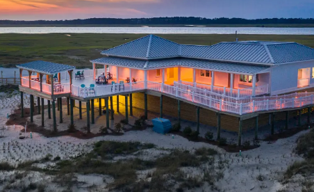
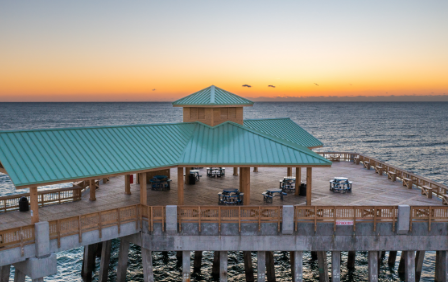
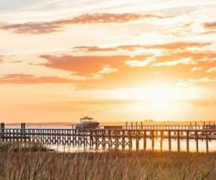
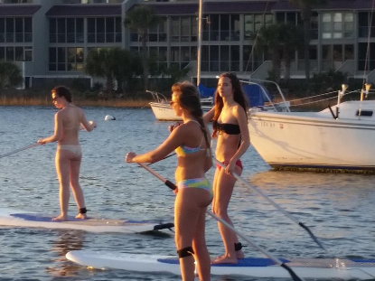
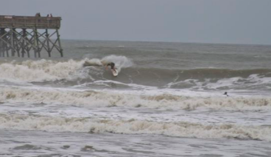
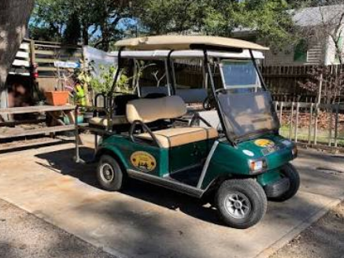
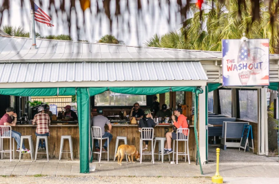
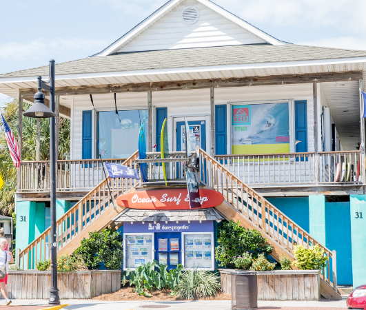
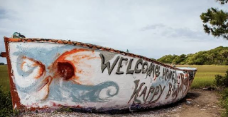
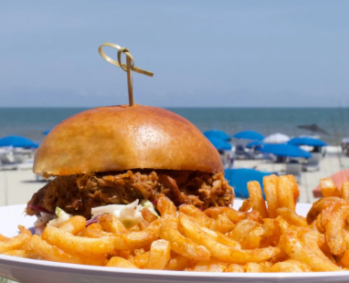

Folly Beach Bachelorette Activities
Sand, tacos, a rooftop, and a house big enough for the whole group. Here is how to fill a bachelorette weekend on the island known as the Edge of America.
- From downtown Charleston
- About 12 miles, a 20 to 25 minute drive.
- Best seasons
- Spring and fall, when the weather suits a beach day and a porch night.
- Home base
- Center Street, walkable to the pier, the restaurants, and the bars.
- Drinks on the sand
- Not allowed. Keep them on the porch or the patio.
The best Folly Beach bachelorette activities are simple: claim a stretch of public beach, work your way down Center Street for tacos and rooftop drinks, and stay close enough to walk everywhere.
This guide covers what to do, where to eat and drink, where to stay, and the local rules that catch bachelorette groups off guard. If you want to split the weekend with downtown, start with our full guide to Charleston bachelorette activities.
The best Folly Beach bachelorette activities
Daytime plans first. Folly does its best work between breakfast and sunset.
-

Set up at Folly Beach County Park
At the west end of the island, the county park has wide sand, restrooms and showers at the Dunes House, and the Wish Tree, covered in shells and wishes. Walk around the bend at low tide for more room to spread out.
Good to know: the park is at 1100 W Ashley Ave and charges an entrance fee, so check the Charleston County Parks site before you go.
-
Michael At Your Place
Get quality interactive fun at your location since there is a lack of clubs for this. This is a show where one gent comes out for the traditional man show.
Good to know: 200$ up to 90min usually last 60min
-

Walk the Folly Beach Pier at golden hour
The pier sits at the ocean end of Center Street and makes the easiest group photo backdrop on the island. Walk out before sunset, then grab a drink at Pier 101, the restaurant and bar on the pier.
-

Catch sunset from the Dunes House deck
The upper deck of the Dunes House at the county park is one of the best sunset spots on the island. Bring the group up for a last look at the water before dinner.
Good to know: sunset time shifts through the year, so check it before you book a dinner reservation.
-

Paddleboard or kayak
Several rental spots near the Folly River side make it easy to get the group out on the water for an hour or two, without any wave experience.
-

Take a group surf lesson
Folly is the Edge of America for surfers, and a beginner group lesson is an easy, low-stakes way to spend a morning.
Good to know: from May 15 to Sept. 15, surfing is off limits between 2nd Street East and 3rd Street West from 10 a.m. to 6 p.m., and always within 200 feet of the pier. Ask your surf school where it teaches.
-

Rent a golf cart, and drive it in daylight
A cart is the easiest way to hop between the beach, lunch, and the pier without a car for every outing.
Good to know: carts can cross Center Street and Folly Road but not drive on them, and they can’t run at night or in the rain. After dark, use a rideshare. Full rules are in the section below.
-

Bar-hop Center Street and East Ashley
Start on the rooftop at Snapper Jack’s, move to the third-floor deck at Taco Boy, and finish in the beer garden at St. James Gate Irish Pub. It is all within a few blocks, so nobody needs a car.
-

Shop Center Street and find the shark
Boutiques and surf shops fill the main strip, which makes for easy browsing between the beach and dinner. The giant fiberglass shark head above the shop next to City Hall is a classic group photo stop.
-

Add a boat day in Charleston
Folly is a beach-and-patio island. If the group also wants a harbor cruise, a floating tiki bar, or a pedal boat, those are covered in our Charleston bachelorette activities guide.
Where to eat and drink on Folly
Folly stays casual, flip-flops-at-the-table casual. Most of these spots are on or just off Center Street.

Morning
- Lost Dog Cafe106 W Huron AveThe go-to breakfast before a beach day, with big portions and a laid-back patio that fits a group.
Lunch and supplies
- Chico Feo122 E Ashley AveAn open-air spot with picnic tables, tacos, rice bowls, and live music on some days. It is outdoors, so it closes when it rains.
- Taco Boy106 E Ashley AveTacos and happy hour drinks on a third-floor deck.
- Loggerhead's Beach Grill123 W Ashley AveA big deck and an outdoor bar steps from the beach.
- Bert's MarketA one-block-from-the-beach grocery and deli that stays open around the clock, useful for stocking the rental.
- Dolce Banana CafeFrozen yogurt, milkshakes, smoothies, and boba for an easy sweet stop.
Sunset
- Snapper Jack's Seafood & Raw Bar10 Center StA three-level building with an ocean-view rooftop patio, an oyster and raw bar, and live music.
- Pier 101101 E Arctic Ave, on the pierDrinks and dinner with an ocean panorama, best right before sunset.
Dinner
- Jack of Cups Saloon34 Center StGlobally inspired comfort food with a rotating seasonal menu, known for its curries and plenty of vegetarian options. There is a full bar and a back courtyard for a group.
- Rita's Seaside GrilleA solid sit-down dinner near the main strip, with a bar area that is easy to gather around.
After dark
- St. James Gate Irish Pub11 Center StA back beer garden that works for a group that wants to sit, not stand.
- Center Street bar-hopBetween Snapper Jack's, Jack of Cups, and St. James Gate you can cover the strip on foot. Save a rideshare for the trip home.
All picks are our own. No business paid to be listed. For more meals on the mainland, see our guide to the best restaurants for a Charleston bachelorette.
Where to stay for a Folly Beach bachelorette weekend
Most groups do better in a house than a hotel block, and closer to Center Street is better than farther.

Rent a house near Center Street
A house within a few blocks of Center Street puts the pier, the restaurants, and the bars on foot. Look for a big porch and enough bedrooms that nobody sleeps on the couch.
Good to know: many rental listings ban parties or sit in noise-sensitive areas, so read the house rules and tell the host it is a bachelorette group. In peak summer, some houses only rent by the week.
Book Tides Folly Beach
An oceanfront hotel at 1 Center St, steps from the pier, with a heated oceanfront pool and on-site dining and bars. It suits groups that would rather have separate rooms than one big house.
Good to know: Tides lists a minimum check-in age of 21, so confirm who is booking the rooms.
Some groups split the trip, a night or two downtown and a night or two on Folly. If that is your plan, see where to stay in our Charleston bachelorette activities guide.
A one-day Folly Beach bachelorette itinerary
Adjust the times to your group. The order is what matters: daytime activities while golf carts and Chico Feo are available, then Center Street once the sun is down.
- MorningBreakfast at Lost Dog Cafe, then head to Folly Beach County Park to set up chairs.
- Late morningBeach time, or a group surf lesson away from the swimming zone.
- LunchTacos at Chico Feo if the weather holds, or Loggerhead's Beach Grill if it does not, since it has indoor seating.
- AfternoonPaddleboards or kayaks on the Folly River side. Return golf carts before dark.
- Golden hourWalk the Folly Beach Pier for the group photos.
- DinnerCurries and cocktails at Jack of Cups, or seafood at Snapper Jack's.
- NightRooftop drinks, then the beer garden at St. James Gate Irish Pub.
- LateRideshare back to the house. Carts are for daylight only.
Know before you go
Folly enforces its rules, and a few of them affect bachelorette plans directly.
On the beach
- No alcohol, including opened drinks in cups.
- No glass.
- No balloons, plastic bags, or Styrofoam, so skip the balloon arch and bring fabric banners.
- No smoking or vaping on the sand, and no open fires or fireworks.
- Tents, coolers, and umbrellas left after sunset can be removed.
Golf carts
- Rental carts must display SC DMV and City of Folly Beach stickers.
- Drivers must be 16 or older with a license and proof of insurance.
- Carts can cross Center Street and Folly Road but cannot drive on them.
- No driving at night, in the rain, or when visibility is limited.
Parking and getting home
- Park all four tires off the pavement and with the flow of traffic.
- Stay off yellow curbs, dunes, and crosswalks.
- Several paid lots serve the beach, including the county lot at the pier.
- Plan a rideshare for nights out, especially after drinking.
Rules come from the City of Folly Beach and can change. Check the city’s website for current rules before your trip.